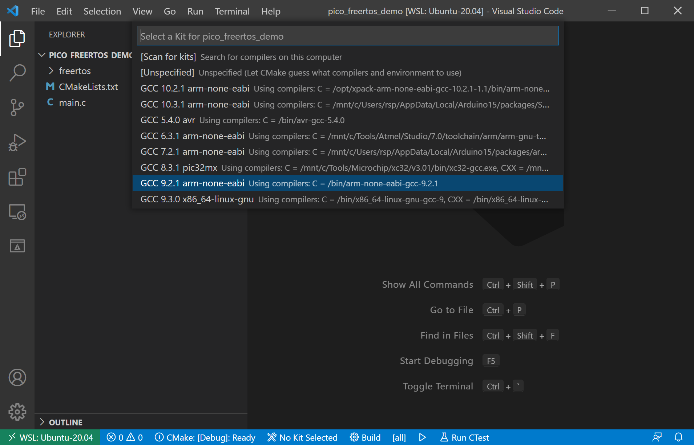
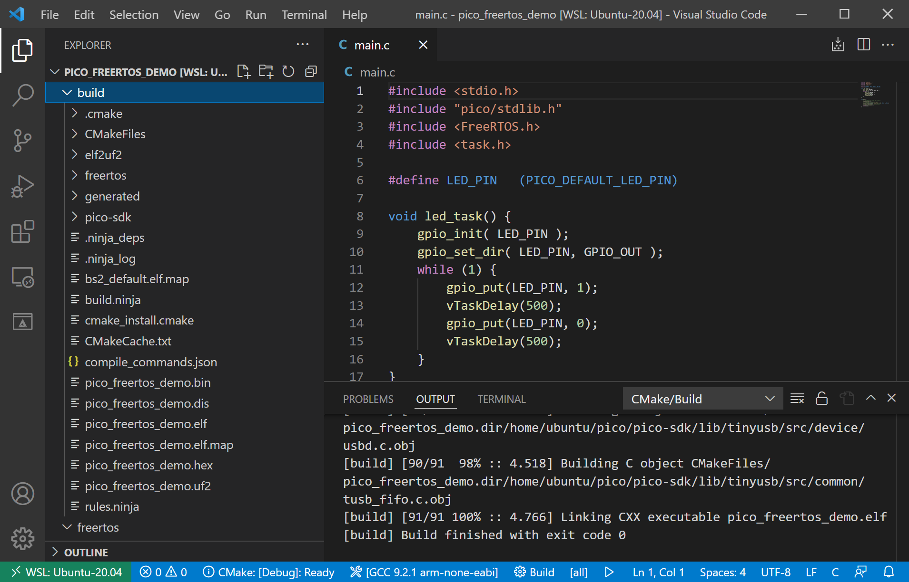
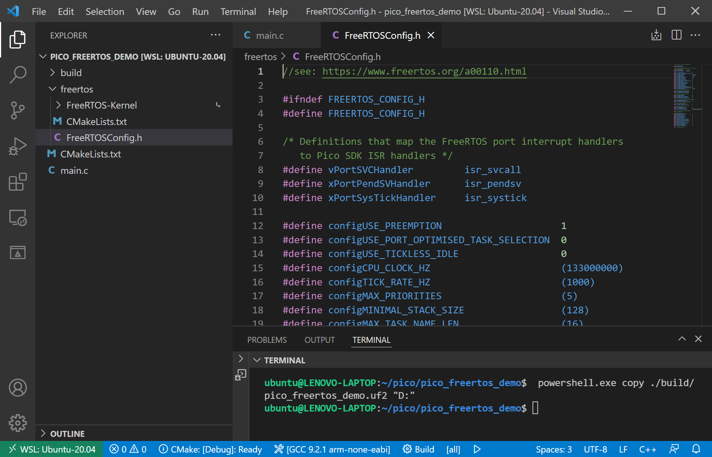
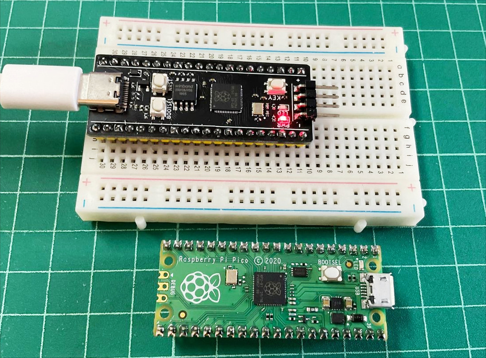

การเขียนโปรแกรมด้วย FreeRTOS Kernel สำหรับบอร์ด Raspberry Pi Pico#
▷ การติดตั้งและใช้งานซอฟต์แวร์เพื่อใช้งาน FreeRTOS#
บทความนี้นำเสนอขั้นตอนการใช้งาน FreeRTOS สำหรับบอร์ด Raspberry Pi Pico ดังนั้นจะต้องมีการติดตั้งซอฟต์แวร์ที่เกี่ยวข้องก่อน แนะนำให้ศึกษาจากบทความ "การติดตั้งและใช้งาน Pico SDK for RP2040 และ VS Code บน WSL 2 / Ubuntu"
ขั้นตอนการดำเนินการ#
- เปิดใช้งาน Ubuntu ที่ทำงานด้วย WSL สำหรับ Windows
- ติดตั้ง Pico C/C++ SDK ในไดเรกทอรี
$HOME/pico - ทำคำสั่งเพื่อดาวน์โหลดซอร์สโค้ดของ FreeRTOS-Kernel
มายังคอมพิวเตอร์ของผู้ใช้ โดยเก็บไว้ในไดเรกทอรี
$HOME/pico/FreeRTOS-Kernel(ทดลองใช้เวอร์ชัน FreeRTOS V10.4.6) -
สร้างไดเรกทอรีสำหรับโปรเจกต์ตัวอย่าง (ตั้งชื่อเป็น
pico_freertos_demo) ให้อยู่ในไดเรกทอรี$HOME/pico- สร้างไฟล์
CMakeLists.txtสำหรับใช้กับคำสั่งcmake(CMake Build Tools) - สร้างไฟล์
main.cสำหรับเขียนโค้ดตัวอย่างเพื่อสาธิตการใช้งาน FreeRTOS ในเบื้องต้น
- สร้างไฟล์
-
สร้างไดเรกทอรีใหม่ที่มีชื่อว่า
freertosให้อยู่ภายใต้pico_freertos_demo- สร้าง Symbolic Link (เหมือน Shortcut) เพื่อให้ชี้ไปยังไดเรกทอรี
FreeRTOS-Kernel - สร้างไฟล์
CMakeLists.txtเพื่อใช้กับซอร์สโค้ดของ FreeRTOS - สร้างไฟล์
FreeRTOSConfig.hเพื่อสาธิตการกำหนดค่าต่าง ๆ ในการใช้งาน FreeRTOS เป็นตัวอย่าง
- สร้าง Symbolic Link (เหมือน Shortcut) เพื่อให้ชี้ไปยังไดเรกทอรี
โครงสร้างของไดเรกทอรีสำหรับโปรเจกต์ตัวอย่าง pico_freertos_demo จะมีลักษณะภายในดังนี้ เมื่อทำทุกขั้นตอนครบแล้ว
$ tree -L 2 $HOME/pico/pico_freertos_demo
.
├── CMakeLists.txt
├── freertos
│ ├── CMakeLists.txt
│ ├── FreeRTOS-Kernel -> ../../FreeRTOS-Kernel
│ └── FreeRTOSConfig.h
└── main.c
2 directories, 4 files
▷ การดาวน์โหลด FreeRTOS-Kernel#
เริ่มต้นด้วยการทำคำสั่งใน Linux Terminal สำหรับ WSL - Ubuntu ดังนี้
# change the working directory to '$HOME/pico'
$ cd $HOME/pico
# clone the master branch of the FreeRTOS-Kernel from github
$ git clone https://github.com/FreeRTOS/FreeRTOS-Kernel.git
เมื่อได้ดาวน์โหลด FreeRTOS-Kernel มาแล้ว ลองทำคำสั่ง tree เพื่อแสดงรายการภายในไดเรกทอรี
$HOME/pico/FreeRTOS-Kernel/ ตามตัวอย่างดังนี้
$ tree -L 1 $HOME/pico/FreeRTOS-Kernel/
├── CMakeLists.txt
├── GitHub-FreeRTOS-Kernel-Home.url
├── History.txt
├── LICENSE.md
├── Quick_Start_Guide.url
├── README.md
├── croutine.c
├── event_groups.c
├── include
├── list.c
├── portable
├── queue.c
├── stream_buffer.c
├── tasks.c
└── timers.c
2 directories, 13 files
▷ การสร้างโปรเจกต์ใหม่#
ถัดไปเป็นการสร้างไดเรกทอรีสำหรับโปรเจกต์ใหม่ โดยตั้งชื่อให้เป็น pico_freertos_demo และสร้างไฟล์ใหม่
ในไดเรกทอรีของโปรเจกต์ ได้แก่ไฟล์ CMakeLists.txt และ main.c และสร้างไดเรกทอรี freertos
ผู้ใช้ WSL - Ubuntu สามารถใช้โปรแกรม
อย่างเช่น notepad.exe ในการสร้างและแก้ไขไฟล์ดังกล่าวได้
# create a new directory for the project named 'pico_freertos_demo'
$ mkdir -p pico_freertos_demo && cd pico_freertos_demo/
File: $HOME/pico/pico_freertos_demo/CMakeLists.txt
#######################################################
cmake_minimum_required(VERSION 3.13)
# initialize the SDK based on PICO_SDK_PATH
# note: this must happen before project()
include($ENV{PICO_SDK_PATH}/external/pico_sdk_import.cmake)
# Set name of project (as 'pico_freertos_demo') and C/C++ standards
project(pico_freertos_demo C CXX ASM)
set(CMAKE_C_STANDARD 11)
set(CMAKE_CXX_STANDARD 17)
pico_sdk_init()
add_subdirectory(freertos)
# add the main.c file to the project
add_executable(${PROJECT_NAME}
main.c
)
# Add the pico_stdlib library
target_link_libraries(${PROJECT_NAME}
pico_stdlib
freertos
)
# Enable USB-serial output and disable UART for printf() output
pico_enable_stdio_usb(${PROJECT_NAME} 1)
pico_enable_stdio_uart(${PROJECT_NAME} 0)
# create map/bin/hex/uf2 file in addition to ELF (.elf).
pico_add_extra_outputs(${PROJECT_NAME})
#######################################################
File: $HOME/pico/pico_freertos_demo/main.c
#include <stdio.h>
#include "pico/stdlib.h"
#include <FreeRTOS.h>
#include <task.h>
#define LED_PIN (PICO_DEFAULT_LED_PIN)
void led_task() {
gpio_init( LED_PIN );
gpio_set_dir( LED_PIN, GPIO_OUT );
while (1) {
gpio_put( LED_PIN, 1);
vTaskDelay( 500 /*ticks*/ );
gpio_put(LED_PIN, 0);
vTaskDelay( 500 /*ticks*/ );
}
}
int main() {
// initialize the stdio for printf()
stdio_init_all();
// create an LED blinking task
xTaskCreate( led_task, "LED_Task", 128, NULL, 1, NULL );
// start the FreeRTOS task scheduler
vTaskStartScheduler();
while(1){};
}
ขั้นตอนถัดไปเป็นการสร้างไดเรกทอรีที่มีชื่อว่า freertos ภายใต้ไดเรกทอรีของโปรเจกต์ pico_freertos_demo
# Under the ./freertos subdirectory:
# 1) make a softlink to the 'FreeRTOS-Kernel' directory
# 2) create and edit the 'CMakeLists.txt' file
# 3) create and edit the 'FreeRTOSConfig.h' file
# create a subdirectory named 'freertos' for the FreeRTOS
$ mkdir -p ./freertos && cd ./freertos
ทำคำสั่งเพื่อสร้าง Soft (Symbolic) Link ให้ชี้ไปยังไดเรกทอรีของ FreeRTOS-Kernel
$ ln -s ../../FreeRTOS-Kernel ./FreeRTOS-Kernel
จากนั้นให้สร้างไฟล์ CMakeLists.txt และ FreeRTOSConfig.h ภายในไดเรกทอรี freertos
ตามตัวอย่างดังนี้
File: $HOME/pico/pico_freertos_demo/freertos/CMakeLists.txt
#######################################################
set(FREERTOS_KERNEL_SRC FreeRTOS-Kernel)
add_library(freertos STATIC
${FREERTOS_KERNEL_SRC}/portable/GCC/ARM_CM0/port.c
${FREERTOS_KERNEL_SRC}/portable/MemMang/heap_3.c
${FREERTOS_KERNEL_SRC}/event_groups.c
${FREERTOS_KERNEL_SRC}/list.c
${FREERTOS_KERNEL_SRC}/queue.c
${FREERTOS_KERNEL_SRC}/stream_buffer.c
${FREERTOS_KERNEL_SRC}/timers.c
${FREERTOS_KERNEL_SRC}/tasks.c
)
target_include_directories(freertos PUBLIC
.
${FREERTOS_KERNEL_SRC}/include
${FREERTOS_KERNEL_SRC}/portable/GCC/ARM_CM0
)
#######################################################
File: $HOME/pico/pico_freertos_demo/freertos/FreeRTOSConfig.h
// see: https://www.freertos.org/a00110.html
#ifndef FREERTOS_CONFIG_H
#define FREERTOS_CONFIG_H
/* Definitions that map the FreeRTOS port interrupt handlers
to Pico SDK ISR handlers */
#define vPortSVCHandler isr_svcall
#define xPortPendSVHandler isr_pendsv
#define xPortSysTickHandler isr_systick
#define configUSE_PREEMPTION 1
#define configUSE_PORT_OPTIMISED_TASK_SELECTION 0
#define configUSE_TICKLESS_IDLE 0
#define configCPU_CLOCK_HZ (133000000)
#define configTICK_RATE_HZ (1000)
#define configMAX_PRIORITIES (5)
#define configMINIMAL_STACK_SIZE (128)
#define configMAX_TASK_NAME_LEN (16)
#define configUSE_16_BIT_TICKS 0
#define configIDLE_SHOULD_YIELD 1
#define configUSE_TASK_NOTIFICATIONS 1
#define configTASK_NOTIFICATION_ARRAY_ENTRIES 3
#define configUSE_MUTEXES 1
#define configUSE_RECURSIVE_MUTEXES 1
#define configUSE_COUNTING_SEMAPHORES 1
#define configQUEUE_REGISTRY_SIZE 8
#define configUSE_QUEUE_SETS 1
#define configUSE_TIME_SLICING 1
#define configUSE_NEWLIB_REENTRANT 0
#define configENABLE_BACKWARD_COMPATIBILITY 0
#define configNUM_THREAD_LOCAL_STORAGE_POINTERS 5
#define configSTACK_DEPTH_TYPE uint16_t
#define configMESSAGE_BUFFER_LENGTH_TYPE size_t
/* Memory allocation related definitions. */
#define configSUPPORT_STATIC_ALLOCATION 0
#define configSUPPORT_DYNAMIC_ALLOCATION 1
#define configAPPLICATION_ALLOCATED_HEAP 1
/* Hook function related definitions. */
#define configUSE_IDLE_HOOK 0
#define configUSE_TICK_HOOK 0
#define configCHECK_FOR_STACK_OVERFLOW 0
#define configUSE_MALLOC_FAILED_HOOK 0
#define configUSE_DAEMON_TASK_STARTUP_HOOK 0
/* Run time and task stats gathering related definitions. */
#define configGENERATE_RUN_TIME_STATS 0
#define configUSE_TRACE_FACILITY 1
#define configUSE_STATS_FORMATTING_FUNCTIONS 1
/* Co-routine related definitions. */
#define configUSE_CO_ROUTINES 0
#define configMAX_CO_ROUTINE_PRIORITIES 1
/* Software timer related definitions. */
#define configUSE_TIMERS 1
#define configTIMER_TASK_PRIORITY (3)
#define configTIMER_QUEUE_LENGTH (8)
#define configTIMER_TASK_STACK_DEPTH (configMINIMAL_STACK_SIZE)
/* Define to trap errors during development. */
#define configASSERT( x )
/* Optional functions */
#define INCLUDE_vTaskPrioritySet 1
#define INCLUDE_uxTaskPriorityGet 1
#define INCLUDE_vTaskDelete 1
#define INCLUDE_vTaskSuspend 1
#define INCLUDE_xResumeFromISR 1
#define INCLUDE_vTaskDelayUntil 1
#define INCLUDE_vTaskDelay 1
#define INCLUDE_xTaskGetSchedulerState 1
#define INCLUDE_xTaskGetCurrentTaskHandle 1
#define INCLUDE_uxTaskGetStackHighWaterMark 1
#define INCLUDE_xTaskGetIdleTaskHandle 1
#define INCLUDE_eTaskGetState 1
#define INCLUDE_xEventGroupSetBitFromISR 1
#define INCLUDE_xTimerPendFunctionCall 1
#define INCLUDE_xTaskAbortDelay 1
#define INCLUDE_xTaskGetHandle 1
#define INCLUDE_xTaskResumeFromISR 1
#endif /* FREERTOS_CONFIG_H */
ข้อสังเกต: รายละเอียดเกี่ยวกับการกำหนดค่าต่าง ๆ สำหรับ FreeRTOS Customization ในไฟล์ FreeRTOSConfig.h
สามารถศึกษาเพิ่มเติมได้จาก https://www.freertos.org/a00110.html
▷ การเปิดโปรเจกต์ใช้งานใน VS Code IDE#
เมื่อสร้างโปรเจกต์ได้แล้ว ให้เปิดโปรเจกต์ใน VS Code IDE โดยทำคำสั่ง code . ใน Linux Terminal
ในไดเรกทอรี $HOME/pico/pico_freertos_demo

รูป: เลือก Kit (Compiler / Toolchains) ใน VS Code IDE เมื่อเปิดไดเรกทอรีของโปรเจกต์

รูป: ทำขั้นตอน Build
ในไดเรกทอรี $HOME/pico/pico_freertos_demo/build มีไฟล์เอาต์พุต .uf2
สำหรับนำไปใส่ลงในไดรฟ์ของบอร์ด Pico (เมื่ออยู่ในโหมด BOOTSEL)
$ powershell.exe copy ./build/pico_freertos_demo.uf2 "D:"

รูป: ทำคำสั่งเพื่อนำไฟล์ pico_freertos_demo.uf2 ไปโปรแกรมลงในหน่วยความจำภายในของบอร์ด Pico

รูป: ตัวอย่างบอร์ดไมโครคอนโทรลเลอร์ที่ได้นำมาทดลอง
▷ ตัวอย่างการเขียนโค้ดแบบมัลติทาสก์ด้วย FreeRTOS#
ตัวอย่างโค้ดต่อไปนี้ สาธิตการใช้คำสั่ง xTaskCreate(...) ของ FreeRTOS เพื่อสร้างทาสก์ได้แก่
- ทาสก์
LED_Taskที่ทำให้ LED กระพริบด้วยอัตราคงที่ และ - ทาสก์
Serial_Taskที่มีตัวแปรเป็นตัวนับขึ้นครั้งละหนึ่ง แล้วส่งข้อความออกทาง Standard Output ผ่านทาง Serial โดยใช้คำสั่งprintf()ทุก ๆ 1 วินาที
#include <stdio.h>
#include "pico/stdlib.h"
#include <FreeRTOS.h>
#include <task.h>
#define LED_PIN (PICO_DEFAULT_LED_PIN) // P25 pin
void led_task() {
gpio_init( LED_PIN );
gpio_set_dir( LED_PIN, GPIO_OUT );
while (1) {
gpio_put(LED_PIN, 1);
vTaskDelay( pdMS_TO_TICKS(100) );
gpio_put(LED_PIN, 0);
vTaskDelay( pdMS_TO_TICKS(100) );
}
}
void serial_task() {
uint32_t counter = 0;
while (1) {
printf( "Counter: %lu\n", ++counter );
vTaskDelay( pdMS_TO_TICKS(1000) );
}
}
int main() {
// initialize the stdio for printf()
stdio_init_all();
// create an LED blinking task
xTaskCreate(led_task, "LED_Task", 128, NULL, 1, NULL);
// create a serial-printf task
xTaskCreate(serial_task, "Serial_Task", 256, NULL, 1, NULL);
// start the FreeRTOS task scheduler
vTaskStartScheduler();
while(1){};
}
▷ กล่าวสรุป#
บทความนี้ได้นำเสนอขั้นตอนการสร้างโปรเจกต์และสร้างไฟล์ต่าง ๆ ที่เกี่ยวข้องกับการเขียนโค้ด C/C++ แบบมัลติทาสก์ (Multi-Tasking) โดยใช้ FreeRTOS สำหรับ Raspberry Pi Pico (RP2040) และนำไปใช้งานร่วมกับซอฟต์แวร์ VS Code IDE
This work is licensed under a Creative Commons Attribution-ShareAlike 4.0 International License.
Created: 2022-02-22 | Last Updated: 2022-02-22